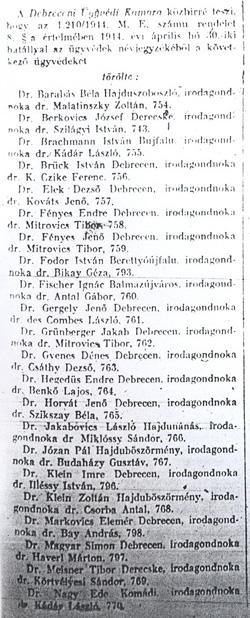

|
• Background • Database • Acknowledgements • Searching the Database |
In 1874, the Hungarian Parliament enacted a law requiring a "Doctor’s diploma" as a prerequisite to practice law. By 1880 there were 4,619 advocates working in the territory of the Kingdom of Hungary in the following lawyers’ associations or chambers:
Budapest, Arad, Balassagyarmat, Besztercebánya, Brasso, Debrecen, Eger, Eperjes, Fiume, Gyor, Kassa, Kecskemet, Kolozsvar, Maramarossziget, Marosvasarhely, Miskolc, Nagyszeben, Nagyvarad, Pecs, Pozsony, Sopron, Szabadka, Szatmarnemeti, Szombathely, Szeged, Szekesfehervar, Temesvar, and Zalaegerszeg.
By 1900, there were 4,806 lawyers registered in the Hungarian Kingdom and by 1910 the number had grown to 6,743. At the same time the number of Jews entering the profession also increased. By 1914, the percentage of Jewish students studying in law schools was close to 30 percent and, according to the 1910 census, 3,049 of the 6,743 lawyers in Hungary were Jewish. The total was probably larger because in 1910 converts to Christianity were not counted as Jews.
The "Numerus Clausus" Law of 1920 led to a drop in Jewish students at Hungarian law schools and consequently, the number of practicing lawyers decreased between 1920 and 1939 from 51 to 40 percent. Maria M. Kovacs, in her book Liberal Professions and Illiberal Politics, claims that in contrast to the medical and engineering professions, the field of law had a more liberal, and less anti-Semitic atmosphere, and that consequently, the effect of Numerus Clausus was relatively moderate in the field. Kovacs also writes about the passive resistance of lawyers’ associations against the discriminatory Jewish laws. She mentions the establishment of the Christian Lawyers National Association in 1938, which, under the leadership of Roman Komarniczki and Geza Vekerdy, had the mission of keeping extremists from the legal profession.
The anti-Semitic Jewish Laws of the 1930s and 1940s defined Jews racially and by 1939, out of 6,738 advocates in Hungary, 3,523, or 52 percent, were classified as Jewish including converts. In Budapest, among 3,386 advocates, 2,040, or 60 percent were Jewish. The Second Jewish Law disbarred 1,488 advocates in Budapest, i.e., more than 70 percent, while in the other counties the percentage was even higher.

This database contains the names of 3,440 Jewish advocates listed in the 1944 edition of the official journal, the Budapesti Kozlony (Budapest Bulletin) together with the names of the lawyers’ chambers with which they were associated. Lists of aryanization were published throughout 1944 announcing the removal of Jews from the fields of medicine, engineering, pharmacy and law. One can also find in the Bulletin announcements of the aryanization of industrial and commercial firms, where in similar fashion to the advocates, the names of Christian caretakers are given. The publication contains the full name of the advocates, the city where they practiced, as well as the names of the Christian advocates who took over the business. (Project researchers also learned that the aforementioned Geza Vekerdy was nominated guardian of the office of Erno Szekely in Budapest in May 1944 and Roman Komarniczki was nominated guardian of the office of Tibor Derzso.)
After 1918, public administration, judicial and prosecutorial positions were closed to Jewish advocates, who were limited to the private practice of general law, the percentage of Jewish advocates in Hungary exceeded 50 percent, while in Budapest it was around 60 percent. Records indicate that the Jews outnumbered the Christians and, as a result, in 1944 many Christians were assigned not one, but several, Jewish practices.
Several years ago, the International Association of Jewish Lawyers and Jurists launched a series of conferences to commemorate the Jewish lawyers and jurists who perished in the Holocaust and their contribution to the law in the countries in which they practiced. In cooperation with the local legal community and public institutions of each country, the International Association of Jewish Lawyers and Jurists Association holds international conferences in major cities across Europe, where they remember and memorialize the names, the achievements and the lives of our colleagues – from the bar, from the bench and from academe; the Jewish lawyers, judges, law professors and legislators who lived and practiced in those countries, who studied and taught in their universities, who wrote law books and created precedents.
One of these projects was the creation of a list of Hungarian lawyers, many, if not most, of whom were murdered in the Holocaust. After the list was completed, more data on individual lawyers was collected from sources including the Pages of Testimony at Yad Vashem, and the data in the Nevek (Names) project, sponsored by the Beate Klarsfeld Foundation. Researchers also used memorial albums published by the Archives of the Museum of Military History in Budapest, as well as the Archives of Yad Vashem to obtain information on hundreds of relatives, many of whom were able to provide photographs, documents and biographies. These biographies and stories, which are included on the project website at http://www.mis-justice.com/main.html, provide many insights into the history of the period and demonstrate the cataclysmic effect these historic upheavals had on the individual and his family. Photographs among the Pages of Testimonies at Yad Vashem, are also included. Further analytical search is possible through either the Yad Vashem website at http://www.yadvashem.org/yv/en/about/index.asp or the Nevek database, now incorporated in the United States Holocaust Memorial Museum Holocaust Survivors and Victims Database at https://www.ushmm.org/remember/the-holocaust-survivors-and-victims-resource-center/holocaust-survivors-and-victims-database.
The compiled list does not provide the names of all Jewish lawyers in Hungary in 1944. Although the researchers worked from the official journal, data from some areas, for example the Association of Szabadka, were incomplete. Also, the names from Delvidek (the Southern territories), were reconstructed from the collection of names at Yad Vashem.
The International Association of Jewish Lawyers and Jurists, founded in 1969 by the Supreme Court Justices Haim Cohn of Israel, Arthur Goldberg of the United States and Nobel Laureate René Cassin of France, strives to advance human rights everywhere, including the prevention of war crimes and the punishment of war criminals. These goals are achieved by the group’s continuing fight against these phenomena as they occur as well as working assiduously to prevent them.
The illustration above, an excerpt from Budapesti Kozlony, May 9, 1944, is an example of the notices that were published announcing aryanization of law offices. The introduction to the list states, "The Debrecen Bar Association announces in accordance with the Prime Minister Decree, No. 1.210/1944, the following have been erased from the Registry of Advocates, effective April 20, 1944."
This database contains the names of 3,440 Jewish advocates listed in the 1944 edition of the official journal, the Budapesti Kozlony (Budapest Bulletin) together with the names of the lawyers’ chambers with which they were associated.
This introduction is based on information at http://www.mis-justice.com/main.html prepared by Dr. Gavriel Bar-Shaked, Yad Vashem, Dr. Julia Bock, acquisition Librarian at the Brooklyn Campus of Long Island University, and Yosef Stern, Data Base Administrator for the Nevek Project. JewishGen is grateful to the International Association of Jewish Lawyers and Jurists who gave us permission to publish this list and information from their website.
The information contained in this database was indexed from the International Association of Jewish Lawyers and Jurists website. Vivian Kahn compiled the list.
In addition, thanks to JewishGen Inc. for providing the website and database expertise to make this database accessible. Special thanks to Warren Blatt and Michael Tobias for their continued contributions to Jewish genealogy. Particular thanks to Nolan Altman, Vice President of Data Acquisition and Coordinator of JewishGen’s Holocaust Database files.
Nolan Altman
May 2016
This database is searchable via JewishGen's Holocaust Database and the JewishGen Hungary Database.